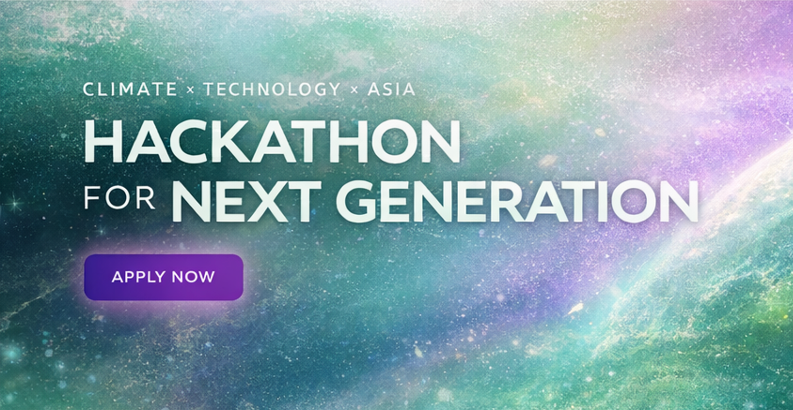

Bridging Digital Artifacts
& Human Narratives
Posters, Python graphics, and digital humanities projects – combining visual storytelling with code.
Archives / 01
Selected Essays
Artifacts / 02
Featured Projects

Dead Poets Society Poster
A film poster designed in GIMP plus a Python-Fu plug-in that auto-generates the same layout from user images.

Turtle Fractals Collection
A small library of Python Turtle fractals, including trees and ferns used in class projects and experiments.

Digital Humanities Project
Final thesis project in UCC’s DAH programme, making an artefact to re-visualize city promotional videos for cultural analysis.

ACTION English Website
Asian Climate-SDG Technology Innovation Hackathon for Next-Generation